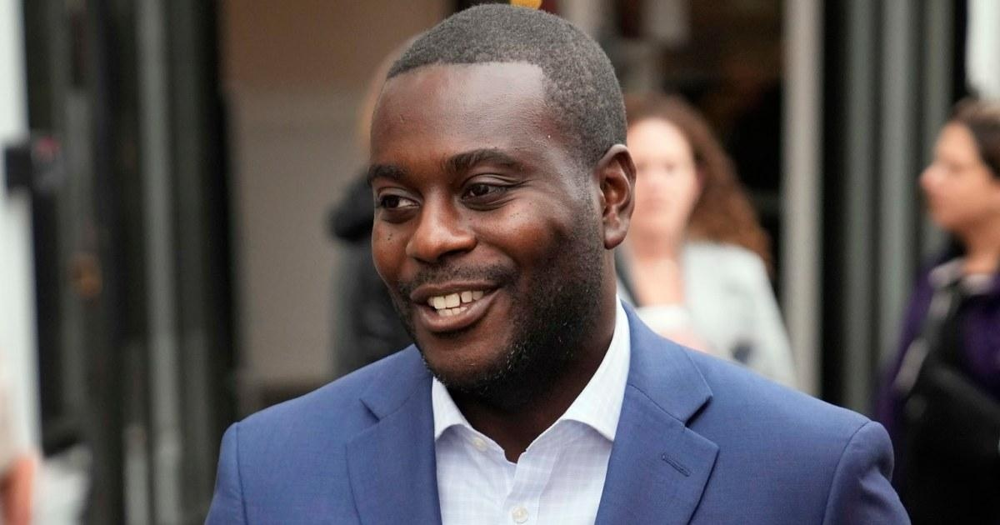

Wednesday’s Campaign Round-Up, 11.8.23Today’s installment of campaign-related news items from across the country. * In Rhode Island’s 1st congressional district, Democratic Rep.-elect Gabe Amo easily defeated Republican Gerry Leonard, and he will fill the vacancy left by former Democratic Rep. David Cicilline. Once he’s sworn in, Amo will be Rhode Island’s first Black representative in Congress. * In a closely watched judicial race, Democrat Dan McCaffery prevailed in Pennsylvania and won a state Supreme Court seat. As a result, the party retains a 5-2 majority on the commonwealth’s highest court. * In big-city mayoral races, Democrat Cherelle Parker was elected as Philadelphia’s next mayor, and she’ll be the first woman to ever serve in the office. In Houston, meanwhile, Rep. Sheila Jackson Lee and state Sen. John Whitmire advanced to a runoff election scheduled for Dec. 9. Both are Democrats. * Though I continue to think the importance of early general-election polling a year from Election Day is overstated, the latest national CNN poll found Donald Trump leading incumbent President Joe Biden, 49% to 45%. |
 |